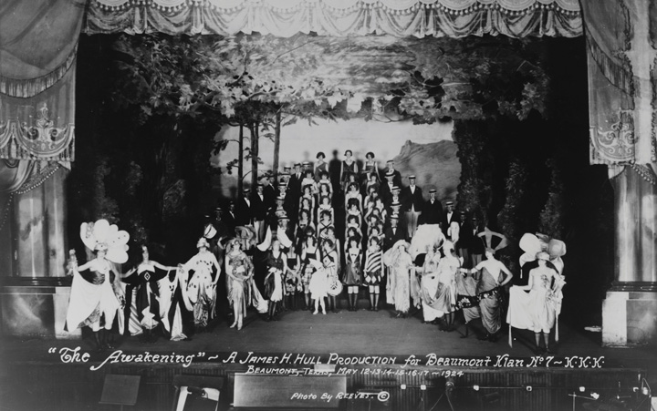
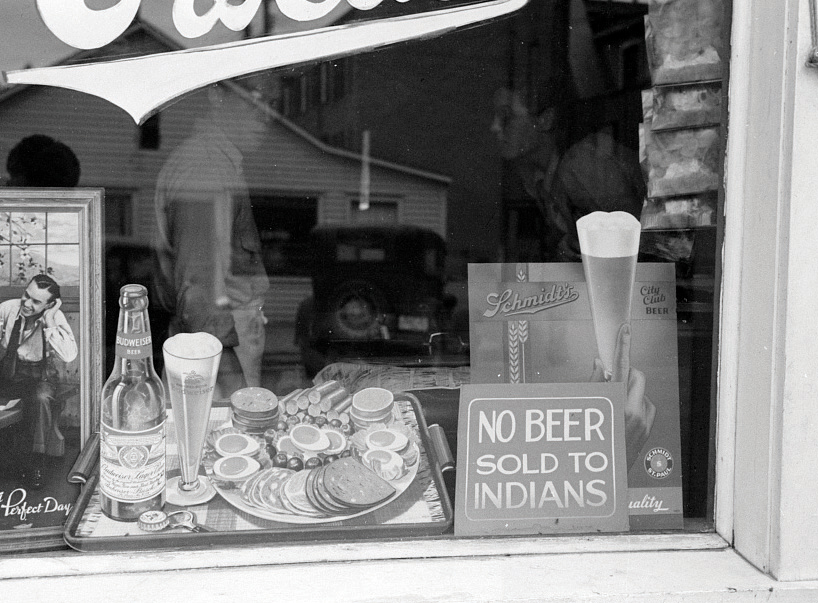
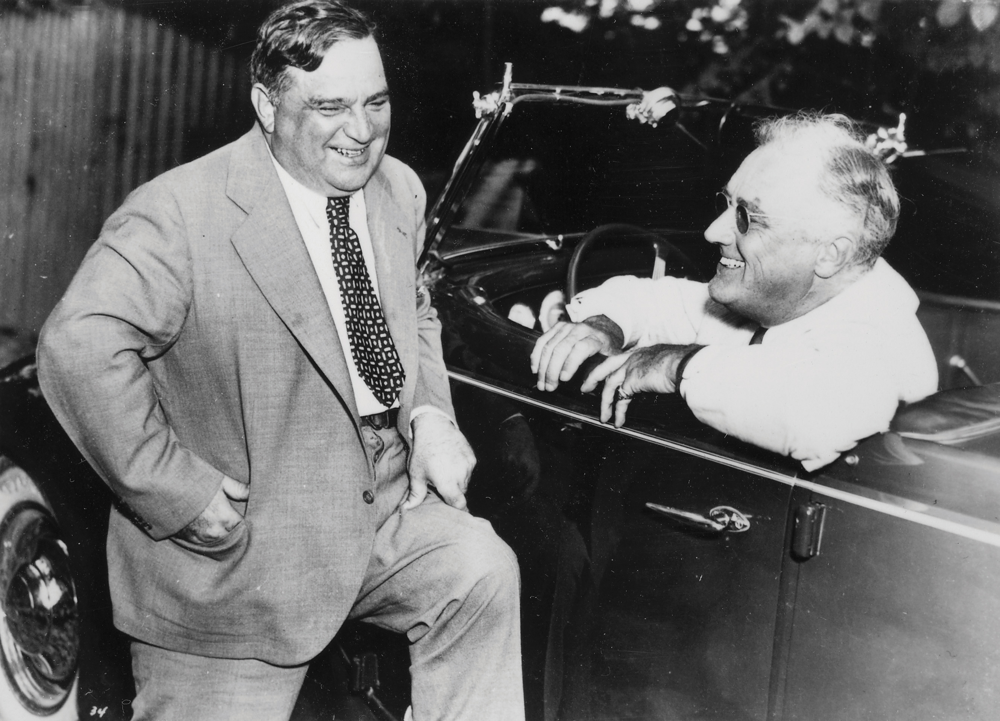
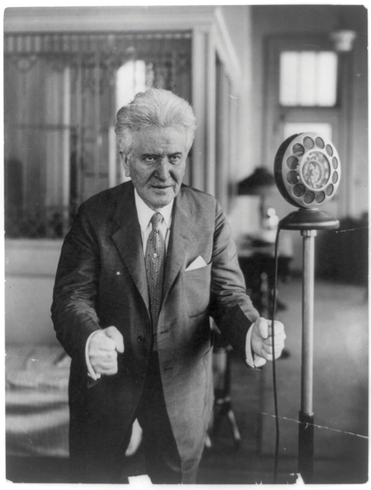

The Ku Klux Klan (KKK) reemerged in 1915 as a nativist organization based on white supremacy. Similar to the original Klan that emerged during Reconstruction, the new Klan sought to return African Americans to a condition resembling slavery. The new Klan also sought to prevent the immigration of nonwhite and non-Protestant families to the US. The emergence of the new Klan coincided with the release of D. W. Griffith’s Birth of a Nation, a film that debuted in 1915 and presented the late nineteenth-century Klan in a heroic light. The next year, the eugenicist Madison Grant’s The Passing of the Great Race warned white Americans that new immigration from Southern and Eastern Europe threatened to fill the United States with inferior races. Influenced by this and other eugenicist works that blended racism with pseudoscience, some Klan members even believed that nonwhites should be sterilized.
The new Klan officially shunned violence and attracted a mainstream following, even if Klan beliefs often led to acts of violence against minority communities. The new Klan emerged during a period of anti-immigrant and antiblack hysteria, as evidenced by the Red Summer of 1919. In that year, mob violence was perpetrated against black communities in both the North and South. The same year, whites on the West Coast attacked Chinese neighborhoods, Midwesterners participated in riots that destroyed black and Hispanic neighborhoods, and whites on the East Coast sought to halt Jewish migration altogether.
Figure 6.13
The new Klan of the 1920s did much more than march in hoods and sheets to spread their message. This Beaumont, Texas, chapter produced a play titled “The Awakening,” which sought to present US history as part of an Aryan struggle against inferior races.
The new KKK grew rapidly during the 1920s, spreading a message that nonwhites and non-Protestants were not “100 percent Americans.” The new Klan attracted a large number of followers, many of whom paraded openly without masks. Leading public figures usually hid their identity when participating in Klan rallies, but it was hardly a secret that a substantial number of the members of state legislatures in Colorado, Indiana, Texas, Oklahoma, and Oregon were also members of the secret order. Oregon lawmakers sanctioned a referendum that voters approved, outlawing private schools—a blatantly unconstitutional attack on the Catholic Church. Klan members held rallies in neighboring Washington State that were attended by 20,000 to 70,000 participants. More sinister indications of West Coast Klan activity were the violent intimidation campaigns against Japanese Americans from the Yakima Valley of Washington to San Diego.
The Klan was especially powerful in Indiana, with an estimated membership of 350,000. The Klan soon became so influential throughout the Midwest that journalist William Allen White of Emporia, Kansas, entered the 1924 race for the governorship and made opposition to the Klan the leading issue of his platform. White became a national figure during the 1890s with his conservative attack on the Populists he feared were creating an antibusiness climate in his beloved state. That White and most other conservatives would speak so forcefully against the Klan was an important factor in the Klan’s decline.
Many historians have been tempted to discount the Second Ku Klux KlanFormed in 1915, the Second Klan was less secretive than its predecessor had been, and the majority of its estimated 4 million members lived in the Midwest and Border South. The Second Klan believed that the United States was in danger of losing its white and Protestant heritage due to the influence of Jews and Catholics, along with the growing presence of nonwhite immigrants from Europe, Latin America, and Asia. Klansmen were also threatened by the growing African American population of the North. of the 1920s as a reactionary element of lower-class whites alienated by the growth, prosperity, and increasing acceptance of nonwhite and non-Protestant Americans. However, the Klan had more than 4 million members at its peak in 1925 and attracted middle-class men and women as equally as it attracted other groups. The Klan was also a fraternal organization complete with a women’s auxiliary that gave many members a sense of identity and belonging with its social gatherings, rituals, and honorary titles. Its rallies were steeped in hypernationalistic worship of the flag and celebration of a mythical past where old-time religion and family values guided America.
Because it did not need to unify its members behind a specific platform or policy, the Klan could represent many things to its members. The Klan could be mainstream and extremist. It could be reactionary and hateful at one moment, only to warmly embrace tradition and family values the next. The hollowness of its rhetoric and the willingness of its members to surrender critical thinking allowed its leaders to express hatred toward unions, impoverished strikebreakers, and big business in the same sitting. It could speak to legitimate social concerns such as crime and government corruption. It could even advocate progressive causes before scapegoating the nation’s problems on a particular ethnic or religious group. Most importantly, the Klan’s restrictive membership meant that venomous accusations against immigrants, Jews, Catholics, minorities, Socialists, or any other group that fell short of their 100 percent Americanism reminded its members of the commonalities they shared.
The Klan grew in membership because of this sense of brotherhood and sisterhood. Equally important, most whites in the 1920s shared some of the basic assumptions of the Klan even if they recoiled from the ways Klansmen expressed their intolerance. Mainstream religious leaders called for Protestant solidarity, while most native-born whites demonstrated assumptions of racial superiority, intolerance for immigrants, distrust of government, and suspicion regarding the loyalties of Jews and Catholics. Klansmen spoke the language of the disaffected and those who felt their way of life was under attack. They also spoke to religious communities by appealing to the preservation of traditional family values. The Klan also demonstrated the ease with which reactionary politics could enter mainstream society during a time of anxiety about rapid social change and the growth of a nonwhite and non-Protestant population.
The significant growth of the Klan’s female auxiliary, the Women of the Ku Klux Klan (WKKK), challenges the notions of many historians who suggest, at least by implication, that reactionary politics was an exclusively male domain. In states such as Indiana, women were equally attracted to the Klan’s message and joined in roughly equal numbers. One historian estimates that as many as one-third of native-born, white Indiana women joined the WKKK. For these women, the WKKK provided a source of community that was ideologically consistent with many of their political and social beliefs. Many of these women had been active in relatively progressive organizations such as the Young Women’s Christian Association. Others were veterans of the fight for women’s suffrage. Because the Klan taught that the rights of white Americans were under assault by foreigners, Jews, and nonwhites, Klan activism was viewed by these women as a continuation of their earlier efforts promoting the welfare of the disaffected.
The WKKK often acted like any other women’s organization, organizing charitable fundraisers for schools, hosting picnics, and joining parades. However, the WKKK also organized boycotts of Jewish businesses, ran attorneys who defended minorities out of town, and devised strategies to unseat school board members who supported integration. Some women even joined secret organizations such as the Queens of the Golden Mask, which conducted some of the Klan’s dirty work. The Indiana Klan leader David Stephenson referred to these women as his “poison squad” and counted on them to spread malicious falsehoods against the families of anyone who dared oppose him or the Klan. However, the WKKK was not merely an adjunct to male leadership. Despite the tendency of Klansmen to celebrate their “protection” of white women, women and men in the Klan sustained female suffrage as a weapon that could help them restore and preserve the values they espoused.
Figure 6.14

“The Watcher on the Tower” was one of the monthly publications of the Washington State Ku Klux Klan. Uncle Sam is pictured wearing a Klan robe. During the conservative political environment of the 1920s, few leading politicians or presidents dared to publicly criticize the Klan, which grew to include as many as four million members.
The Klan’s blatant celebration of white supremacy might have led to official condemnation from presidents, but these men generally avoided any action that could leave them open to criticism by white voters. Warren Harding was an avowed segregationist, at least when speaking to white Southerners. Calvin Coolidge argued that the federal government should not interfere with “local issues” involving race and religion. He did little to support antilynching legislation and tolerated the continued segregation of federal government employees. Herbert Hoover spoke out against lynching but did little to support antilynching legislation. Instead, he supported the creation of an all-white Republican Party in the South. By preventing black membership, some members of the Republican Party hoped that they could finally end the association between their party and memories of emancipation and Reconstruction. Although he had spoken in opposition to racial segregation while a politician in Wisconsin, even progressive Republicans such as Robert La Follete avoided addressing racial issues once they became candidates for national office.
The Klan declined quickly in 1925 due to three factors. First and most importantly, mainstream conservatives and local officials began to join liberals in denouncing the Klan and its bigotry as un-American by 1923. Second, the hollowness and negativity of their message led many members to lose enthusiasm over time. Finally, local and national Klan leaders became the target of investigations that revealed irregularities regarding the tens of millions of dollars Klan members donated to the organization. The secrecy of the Klan allowed leaders to embezzle its untraceable funds for several years. The result was that many individual klaverns were near bankruptcy, while a coterie of Klan leaders began to display their newfound wealth in ways that aroused suspicion and jealousy among other members.
A series of national scandals in the mid-1920s also led many to question the Klan’s espoused support for Christianity, chivalrous protection of white women, and Protestant family values. Indiana Klan leader David Stephenson was convicted in 1925 of embezzlement and second-degree murder after his secretary, whom he had previously raped and assaulted, was found dead. The Indiana Klan had been the largest in the nation with 350,000 members. By the end of 1926, Klan membership in the Hoosier State plummeted to 15,000. Meanwhile, two leading Southern Klansmen were found together in a hotel bedroom with no clothing or women in sight. These and countless other allegations and indictments against Klan leaders made many members question whether they had been deceived by demagogues. The negative attitudes toward non-Protestants and nonwhites remained through the late 1920s and 1930s. However, the downfall of the Klan led many to question these beliefs. Others simply expressed them in more cautious ways.
The rebirth of the Klan also led to greater activism among Jewish organizations, the NAACP, and immigrant rights groups. For example, NAACP chapters across the nation secured injunctions against the Birth of a Nation, an action that energized local chapters. Civil rights groups that defended the rights of immigrants also expanded in response to anti-Klan sentiment. However, because 24 million immigrants entered the United States between 1880 and 1920, many began to fear that the nation was growing too fast. By way of comparison, the total US population at the turn of the century was only 76 million. Many of these newcomers were treated poorly because of their ethnic background. Their reception only grew more hostile as the postwar recession accelerated through 1921. Unemployment soared to nearly 9 percent, and many out-of-work individuals blamed recent immigrants for their misfortune.
Congress responded by passing the Emergency Quota Law of 1921. As the name suggests, the law was meant to enact temporary restrictions on immigration to curb the number of newcomers that might compete for jobs. However, immigration was always a sensitive topic in the US. After all, nearly all Americans were immigrants or the descendants of people who came to America through coercion or free will. As a result, America wrestled with both the heightened nativist impulse of the era and the desire to create a fair law that did not discriminate against any particular ethnicity.
The 1921 law limited the number of immigrants who could be admitted into the United States from any particular country to a number no greater than 3 percent of the total number from that country who were living in the United States in 1910. For example, if there were 1 million Irish living in the United States in 1910, up to 30,000 might legally enter the United States each year. On its face, the law appeared to be racially and ethnically neutral. However, the bulk of the US population in 1910 was from Britain and Western Europe, and most of the migrants who were trying to enter the United States were from nations in Southern and Eastern Europe. These migrants tended to be Jewish, as well as Polish, Italian, Slavic, Greek, and other groups that were severely discriminated against.
Figure 6.15
Native Americans and immigrants faced continued discrimination during the early twentieth century. This photo was taken in South Dakota, which was home to a number of Native Americans, some of whom were economically distressed and coping with alcoholism. While some believed that signs like this were evidence of trying to “protect” natives, the negative assumption that all natives were alcoholics and undesirable patrons is also apparent.
The economy recovered in the next few years, but nativist sentiment remained a strong political force. With support of groups ranging from the Klan to mainstream labor unions, Congress approved the National Origins Act of 1924A law that attempted to curtail immigration from central and southern Europe by creating quotas based on the national origins of immigrants listed in the 1890 census. Because most American immigrants were “white” Europeans from Western Europe in 1890, the law effectively limited immigration of Jews, Italians, Czechs, Poles, Russians, and other groups. The law also implicitly banned immigration of Asians by its provision against any group who was ineligible for citizenship. with only a handful of dissenting votes. This law was clearly intended to restrict migrants from Southern and Central Europe, but it cunningly obscured this objective by issuing quotas that made no mention of race, nationality, or ethnicity. Instead, the National Origins Act created quotas that were based on the 1890 census. Although three more recent census records were available, 1890 was the most recent census taken prior to the arrival of large numbers of Jews and Southern Europeans.
The law established a quota limiting the number of immigrants from a particular nation to no more than 2 percent of the total number of immigrants who were living in the US prior to 1890. As a result, the law limited the new immigrants from Southern and Eastern Europe to a few thousand per year while permitting far more “white” Europeans from Britain, France, and Germany than actually desired to migrate to the United States. The law was even less subtle regarding those from India and Asia who were excluded entirely by a provision barring the immigration of persons who were ineligible for citizenship. At this time, a variety of laws prohibited anyone of Asian origin from becoming a citizen, while many localities had passed other discriminatory laws that applied specifically to Chinese immigrants.
President Coolidge expressed the view held by many Anglo-Americans that associated whiteness as one of the defining characteristics of what it meant to be an American. “America must be kept American,” Coolidge exclaimed upon signing the 1924 act into law. Others such as New York congressman Fiorello LaGuardia argued that the law and the sentiment it produced were contrary to the best interests and finest traditions of the United States.
LaGuardia was the son of an Italian father and Jewish mother. As such, he and his family represented precisely the kind of “un-American” amalgamation the 1924 law sought to prevent. LaGuardia spoke at rallies sponsored by his constituents from the racially and ethnically diverse melting pot of East Harlem. LaGuardia joined tens of thousands of New Yorkers and millions of immigrants across the nation in declaring that they would not be treated as strangers in their own land. Similar protests were held on the West Coast, including legal challenges to California’s Alien Land Law of 1920, which prohibited Asian Americans from owning land. Although the California law was framed as a law intending to limit foreign ownership of the nation, the intent was to prevent Californians of Asian descent, who by law could not be citizens, from being anything but landless peasant laborers.
Figure 6.16
New York congressman Fiorello LaGuardia pictured with Franklin Delano Roosevelt, who is seated in his car. LaGuardia defended the rights of immigrants in Congress along with fellow New Yorker Emanuel Celler.
Congressman Emanuel Celler sought to remove the façade of racial neutrality these laws constructed. He also sought to present immigration as a positive good for the nation, challenging his opponents to explain why the eight states with the highest numbers of recent immigrants were also the states that featured the greatest economic growth. Celler represented New York City in Congress for five decades and sponsored a bill that abolished these quotas in 1965.
Despite the protests of many nativists, neither the 1921 nor the 1924 law established quotas or restrictions against immigrants from the Western Hemisphere. Officially, the US government permitted immigration from these nations as part of its commitment to stewardship of the Western Hemisphere, as expressed in the Monroe Doctrine. In actuality, the unrestricted legal immigration from Mexico and other nations was a political compromise demanded by congressmen who represented industry and agribusiness in Texas and the rest of the Southwest. World War I and the subsequent restrictions against migration resulted in Western and Midwestern farms and industries depending on Mexican immigration. Hundreds of thousands of Mexican nationals would enter the nation legally each year until the start of the Great Depression, paying $18 in taxes and fees to receive a visa and work permit. Some of this revenue offset the expense of the US Border Patrol that was also established in 1924. However, at this time, the Border Patrol was one of the smallest federal agencies, and little political pressure existed to prevent those who crossed the border without obtaining legal documentation.
In 1924, the federal government also passed a law permitting Native Americans to become citizens. The law included the federal territory of Alaska where natives had long been fighting for the right to become citizens. For example, the Alaska Native Brotherhood and the Alaska Native Sisterhood had been advocating for citizenship for over a decade before the law was passed. In 1915, the Alaskan government approved a law opening the door for citizenship for natives. However, this process required five whites to testify that an applicant had renounced all traditional ways and was fully assimilated. Much like the Jim Crow South, Alaskan establishments displayed signs indicating that no natives would be served in restaurants. Similar messages appeared in advertisements for laborers specifying that only “white” workers need apply.In the late 1920s, the Brotherhood and Sisterhood joined together using both moral suasion and other more direct methods to protest establishments that discriminated against Alaskan natives. The campaign for civil rights in Alaska peaked during World War II when natives were forcibly removed and arrested for violating the policies of segregated theaters. Efforts of activist Elizabeth Peratrovich and many others would ultimately lead to the passage of an Alaskan law banning segregation in 1945. However, both formal and informal segregation within establishments would persist until statehood, especially in areas where natives lacked economic power precisely because of their exclusion from employment opportunities.
Nicola Sacco and Bartolomeo Vanzetti were arrested in May 1920 following an attempted robbery of a Massachusetts factory that had left two men dead. Although very little evidence linked them to the crime, both men were radicals who had expressed support for anarchist violence in the past. And they were also Italians, part of the despised group of “new immigrants” whose desperate conditions in Southern Europe had led them to the United States. Convicted in 1921 of both robbery and murder, Sacco and Vanzetti’s case attracted the attention of Italian American groups such as the Order Sons of Italy in America who sought to publicize what they believed had been a miscarriage of justice.
Each of these immigrant groups had grown increasingly concerned by the reactionary climate of the 1920s. They sought to demonstrate how the convictions of these two men demonstrated the injustice of the criminal justice system for immigrants and radicals. Over the next six years, these groups filed a number of appeals that raised serious doubts about the guilt of the two men but failed to reverse their death sentences. Several witnesses described the burglars in ways that conflicted with the appearance of both Sacco and Vanzetti. In addition, police could not link either man’s fingerprints to the crime, and neither was found in possession of the $15,000 that had been stolen.
However, these appeals and subsequent trials publicized the extremism of some of Sacco and Vanzetti’s political beliefs. Both men were supporters of Italian anarchists who advocated anti-Capitalist revolution through violent tactics such as bombings and assassinations. Equally important, the two men had ties to known anarchists who were atop the Department of Justice’s most-wanted list for several attempted assassinations. The trials also demonstrated the unlikelihood that either man would have been convicted of the original burglary had it not been for their radical beliefs.
Despite international protest ranging from Buenos Aires to Rome, both men were executed on August 23, 1927. Most “white” Americans believed the two men were either guilty of this crime or likely to commit another because of their radical beliefs. Most recent immigrants from central and southern Europe, along with other minority groups who were no strangers to police discrimination, were less likely to sustain the decision of the court. As a result, the Sacco-Vanzetti TrialsA highly publicized series of trials and appeals seeking to overturn the execution of two Italian immigrants who had been arrested in connection with a robbery and murder. Although little evidence connected the two men to the crime they were eventually executed for, both were known to support radical anarchists who advocated the use of violence. demonstrated that the Red Scare extended throughout the 1920s and also revealed that Americans of different racial and ethnic backgrounds perceived the same events quite differently. It also renewed questions about whether the US justice system tried defendants for their actions or their political beliefs and background.
Figure 6.17

The 1924 election featured a solidly Democratic South. La Follette carried only his home state of Wisconsin and the Republican Calvin Coolidge easily won a second term.
Calvin CoolidgeA conservative Republican attorney who was selected as Warren Harding’s running mate, Coolidge was elevated to the office of president in August 1923 when Harding died. became president following the death of Warren G. Harding in 1923. Coolidge was perhaps the most enigmatic leader of the early twentieth century. Many conservatives spoke out against the growing power and size of government yet sought to expand certain aspects of government authority. However, Coolidge was consistent in believing the federal government should defer to the states. He also demonstrated deference to the Supreme Court and Congress, believing that a president should not be too involved in the day-to-day business of government. At other times, Coolidge demonstrated support for progressive goals. For example, Coolidge outlined a broad legislative agenda full of specific goals, such as child-labor laws, improvements in health care, and environmental protection during one of his addresses to Congress.
Figure 6.18
As a three-term senator through the early 1900s, Robert La Follette led the Progressive wing of the Republican Party. He was governor of Wisconsin and would later poll nearly 5 million votes as a third-party candidate for the presidency in 1924.
Most other times, Coolidge lived up to his nickname of “Silent Cal.” As president, Coolidge rarely dominated a conversation and delivered speeches that often lasted only a few minutes. And yet it was Coolidge and not Franklin Delano Roosevelt (FDR) who was the first to use regular radio addresses to the nation, even if FDR would later be credited with originating the idea. Coolidge would also decline running for reelection in 1928, despite the near certainty of victory. A leading biographer suggests that Coolidge may have suffered from clinical depression. Although it is tempting to apply this explanation to his decision to leave public life as well as his insistence on sleeping twelve hours per day while president, no one really understood what drove Coolidge to abandon the hard work and ambition of his earlier years.
Coolidge conducted most of his 1924 reelection campaign from the White House through correspondence. His vice presidential candidate, Charles Dawes, was an enthusiastic campaigner and attacked the third-party candidacy of Robert La FolletteA Republican politician from Wisconsin who was deeply influenced by the Progressive Movement of the early 1900s, La Follette enacted a number of reforms as governor of Wisconsin; these laws were aimed at increasing the power of government to regulate corporations. La Follette ran for president in 1924 as a third-party candidate and received one in six votes, despite the fact he had little chance of winning the general election. As a result, La Follete’s candidacy demonstrates that Progressive ideas continued to influence government into the 1920s. as promoting socialism. The Democrats nominated a corporate attorney named John W. Davis after several days of balloting. Southern conservatives and northern progressives vied for control of the Democratic Party in ways that ensured a Republican victory short of some major scandal or economic disaster. The Democrats of the North tended to be urban, recent immigrants, Catholic or Jewish, supporters of progressivism, and opponents of Prohibition. The Democrats of the South were white Protestants, old-stock Americans opposed to immigration, and supporters of Prohibition. As long as Coolidge stayed in the White House and the economy did not implode, the election had already been decided unless the Democrats could find a way to unite.
Instead, Northern Democrats were angered by the party’s compromise selection of Davis, who might have been mistaken for a Republican in most states beyond his native West Virginia. Meanwhile, La Follette entered the race under the banner of the Progressive Party. His platform demonstrated that Progressive ideas about governmental reform had not been forgotten during the relative prosperity of the 1920s. Ironically, the conservative Coolidge may have gained from La Follete’s more liberal campaign, as the Progressive Party likely took more votes away from Davis than Coolidge. Yet even if every one of the nearly 5 million supporters of La Follete had joined with the Democrats, Coolidge would still have won the election of 1924 in a landslide.